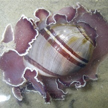

|
|
| slugs text index | photo index |
| Phylum Mollusca > Class Gastropoda > sea slugs > Order Cephalaspidea |
| Paper
bubble snail Hydatina sp. Family Aplustridae updated May 2020 Where seen? These beautiful snail is sometimes seen on our Northern shores. It was previously placed in Family Hydatinidae. Features: 1-4cm. Shell smooth globular may be thin, usually with colourful spirally stripes. The body mantle is much larger than the shell and held in frills. It lacks an operculum. The animal can withdraw completely or almost completely into its shell. What does it eat? It feeds exclusively on Spaghetti worms (Family Cirratulidae), swallowing them whole and incorporating the toxins of their prey for their own defence. |
 Chek Jawa, Apr 08 Photo shared by Toh Chay Hoon on flickr. |
| Family Aplustridae recorded for Singapore from Tan Siong Kiat and Henrietta P. M. Woo, 2010 Preliminary Checklist of The Molluscs of Singapore. ^from WORMS
|
Links
References
|